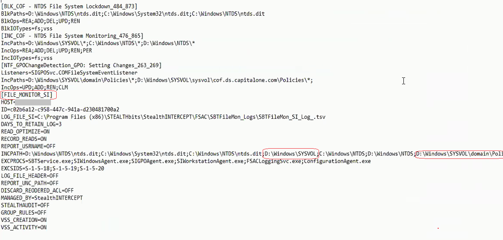

Summary: Using SYSVOL as a path in a SI File System Activity policy (fs) will result in massive traffic
Issue: In addition to running DC's disk drives out of space most SI Agents started generating several times the normal volume of events showing 1.6 to 2.0 million 'events in queue' in the SI Console.
Instructions: In a misguided attempt to "improve" .dit file monitoring and blocking policies customer added "SYSVOL" to paths for SI File Activity policy. The AD .dit files will not be located under SYSVOL.

The SYSVOL portion of the file system were GPO settings / definitions live on a DC. This area of the file system is replicated between DC's so there is a very high volume of read/write activity in SYSVOL child folders.
In customer case activity here resulted in over 1 GB of .tsv data per day per each of several hundred DC's. All getting dumped on the EM for processing including sending to SIEM.
Note: To monitor for changes to GPO's use GPO event type in SI policy - that triggers use of special service to watch for changes in content under SYSVOL and reports file delta's as GPO setting changes to the SI Agent.
Thus removing 'SYSVOL' path from FS Policy include path filter tab resolved the problem.
Product: StealthINTERCEPT
Module: SI - File System Agent
Versions: All
Dev Ticket: SF 32608 / SF 32467
Legacy Article ID: 2303